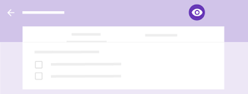
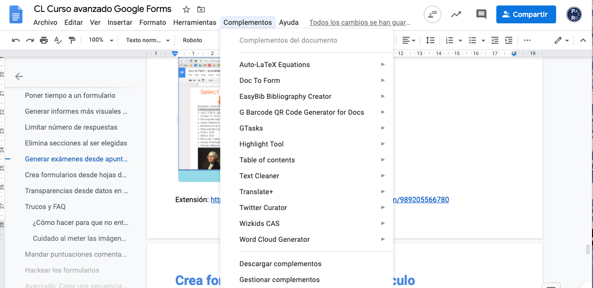

Este curso ha sido preparado para impartir al PDI de la Universidad de Jaén. Pretende hacer un recorrido sobre el uso de los Formularios Google, desde lo más básico, hasta herramientas avanzadas, tips y trucos, y soluciones a posibles situaciones que se plantean en la docencia y evaluación universitaria.


Crear un formulario
- Elige una opción:
En forms.google.com, haz clic en En blanco o elige una plantilla.
En drive.google.com, haz clic en Nuevo  Más. Junto a Formularios de Google, coloca el cursor sobre la flecha hacia la derecha haz clic en Formulario en blanco o Desde una plantilla.
Más. Junto a Formularios de Google, coloca el cursor sobre la flecha hacia la derecha haz clic en Formulario en blanco o Desde una plantilla.
- Asigna un nombre al formulario: en la esquina superior izquierda, haz clic en Formulario sin título o en el nombre de la plantilla e introduce un nombre nuevo.
- Escribe en el navegador form.new o forms.new
Añadir preguntas
| Haz clic en Pregunta sin título e introduce tu pregunta. Se mostrarán sugerencias basadas en el tipo de pregunta que hayas elegido. |
| (Opcional) Para cambiar el tipo de pregunta, haz clic en la flecha hacia abajo . |
Añade opciones de respuesta (si el tipo de pregunta lo requiere). | |
| (Opcional) Para especificar si los usuarios deben responder a la pregunta, haz clic en Obligatorio. |


Para añadir más preguntas, elige una de las siguientes opciones:
Para añadir una pregunta, haz clic en el icono . | |
| Para copiar una pregunta, haz clic en el icono . |

Es posible agregar reglas de validación en las preguntas
Editar preguntas
Puedes añadir diferentes elementos, como imágenes o vídeos, a una pregunta en cualquier momento. También puedes reorganizar o eliminar preguntas.
Tienes las siguientes opciones disponibles:
| Arrastrar las preguntas para reordenarlas. También puedes hacerlo con las respuestas. |
| Eliminar una pregunta. |
Haz clic en Más
| |
| Para ordenar las preguntas de manera aleatoria, haz clic en Configuración |
Añadir una imagen a una pregunta. También puedes añadir imágenes a respuestas y formularios. | |
| Añadir un vídeo de YouTube. |
Configura el formulario
Decide quién puede acceder a un formulario y si recoger las direcciones de correo electrónico de los encuestados. De manera predeterminada, los formularios solo se comparten con la Universidad de Jaén y no se guardan las direcciones de correo.
Haz clic en Configuración  General y elige cualquiera de las siguientes opciones:
General y elige cualquiera de las siguientes opciones:
Solicitar direcciones de correo electrónico y nombres
Para identificar a las personas que respondan al cuestionario y enviarles comentarios o los resultados que han obtenido, puedes solicitar que especifiquen sus direcciones de correo electrónico y sus nombres.
Para activar la recopilación de direcciones de correo electrónico, haz clic en Configuración Recopilar direcciones de correo electrónico. Hay dos maneras de recopilar las direcciones:
- Exclusivamente del dominio: se recopila automáticamente la dirección de cada persona del correo electrónico de la organización (con la que han iniciado sesión). Marca la opción Restringir a usuarios de [tu organización] y dominios de confianza.
- Sin limitaciones: las personas que respondan al cuestionario pueden introducir cualquier dirección de correo electrónico. Desmarca la opción Restringir a usuarios de [tu organización] y dominios de confianza.
Para recopilar los nombres de las personas que respondan al cuestionario, crea una pregunta donde se les pida que indiquen cómo se llaman. También puedes crear una sección específica destinada a recopilar los nombres y las direcciones de correo electrónico. Consulta el artículo sobre cómo llevar un control del grupo al que pertenecen los alumnos que completan un mismo cuestionario.
Otras opciones de configuración
- Acuse de recibo de respuestas: envía copias de las respuestas automáticamente o mediante solicitud.
- Restringir a usuarios de la Universidad de Jaén y dominios de confianza: limita los destinatarios del formulario a los miembros de la Universidad de Jaén. Para poder enviar el formulario a personas ajenas a la organización, desmarca esta casilla.
- Limitar a 1 respuesta: permite que los usuarios rellenen el formulario una sola vez.
- Editar después de enviar: permite que los usuarios modifiquen sus respuestas después de enviarlas.
- Ver gráficos de resumen y respuestas de texto: permite que los usuarios vean un resumen de las respuestas de todos.
Cuando hayas terminado de hacer cambios, haz clic en Guardar.
Permitir que otros usuarios revisen y editen un formulario:
- En la parte superior derecha, haz clic en Más
 Añadir colaboradores.
Añadir colaboradores. - En Invitar a personas, introduce las direcciones de correo electrónico de los usuarios con los que quieras compartir el documento.
- Haz clic en Enviar.
Las personas que invites pueden editar cualquier parte del formulario, incluidas las respuestas y el lugar en el que se guardan.
Revisar un formulario
Puedes obtener una vista previa de un formulario mientras modificas su configuración para revisar los cambios. También puedes revisarlos una vez que hayas terminado.
- En la parte superior derecha, haz clic en Vista previa .
La vista previa se abre en una ventana nueva. - Para editar el formulario, haz clic en el icono
 o vuelve a la ventana de edición.
o vuelve a la ventana de edición.

Enviar un formulario
Cuando estés preparado para distribuir tu formulario, puedes enviarlo por correo electrónico, copiar y pegar su enlace en un chat o un mensaje de correo electrónico, insertarlo en una página web o compartir su enlace en las redes sociales.
Arriba a la derecha, haz clic en Enviar.
Controlar quién puede responder
Puedes limitar la participación a personas de la Universidad de Jaén. De ese modo, solamente podrán responder las personas que tengan un correo electrónico asociado a la UJA. Si no estableces este tipo de limitación, se podrá responder al cuestionario con cualquier dirección de correo electrónico.
Si quieres que solo respondan los miembros de la Universidad de Jaén, haz clic en Configuración Restringir a usuarios de Universidad de Jaén y dominios de confianza.
(Opcional) Para recopilar direcciones de correo electrónico, elige una de las siguientes opciones:
- Si todos los destinatarios del formulario son miembros de la Universidad de Jaén, marca la casilla "Recopilar automáticamente la dirección de correo electrónico de Universidad de Jaén".
- Si vas a distribuir el formulario de forma externa, marca la casilla Recopilar direcciones de correo electrónico.
Puedes enviar el formulario con estos métodos:
| Correo electrónico: haz clic en Correo electrónico (a). Introduce las direcciones de correo electrónico en el campo Para. Puedes personalizar el asunto y el mensaje. |
Enlace: haz clic en Enlace . Puedes acortar la URL. Haz clic en Copiar y pega el enlace en una conversación de chat o en un mensaje de correo electrónico. | |
Sitio web: haz clic en Insertar . Puedes indicar las dimensiones del iframe. Haz clic en Copiar y pega el código HTML en tu sitio web o blog. | |
Redes sociales: haz clic en uno de los iconos de redes sociales. |

Pausar o detener la recopilación de respuestas
Al crear un formulario, la recopilación de respuestas se activa automáticamente. Puedes pausarla o detenerla. Por ejemplo, si detectas un error después de enviar un formulario, puedes dejar de registrar respuestas hasta que el error esté corregido.
Pausar o detener la recopilación de respuestas:
- En el formulario, haz clic en Respuestas.
- Haz clic en Se aceptan respuestas. El ajuste cambiará a No se aceptan respuestas.
(Opcional) Añade un mensaje para que lo vean las personas que intenten responder al formulario. Por ejemplo, si vas a reanudar la recopilación de respuestas más adelante, puedes añadir algo como: "Este formulario está en pausa. Intenta responder más tarde".
Una vez que hayas distribuido el formulario, las respuestas se mostrarán en la pestaña Respuestas. También puedes recibir un correo electrónico cada vez que llegue una respuesta nueva. |
Ver las respuestas en Formularios
Puedes ver un resumen de todas las respuestas o consultarlas una por una en la pestaña Respuestas. Para pasar de una respuesta a otra, haz clic en las direcciones de correo electrónico de los encuestados.
Ver las respuestas en Hojas de cálculo
Para analizar las respuestas con más detenimiento, puedes enviarlas a una hoja de cálculo. La hoja de cálculo está enlazada al formulario, así que las respuestas irán apareciendo en tiempo real.
Enviar respuestas a una hoja de cálculo nueva:
- En Formularios, ve a la pestaña Respuestas y haz clic en Más Seleccionar destino de las respuestas.
- Haz clic en Crear una hoja de cálculo.
- (Opcional) Puedes cambiarle el nombre, si quieres.
- Haz clic en Crear.
Enviar respuestas a una hoja de cálculo que ya exista:
- En Formularios, ve a la pestaña Respuestas y haz clic en Más Seleccionar destino de las respuestas.
- Elige Seleccionar hoja de cálculo Seleccionar.
- Elige la hoja de cálculo y, a continuación, haz clic en Seleccionar.
Para abrir la hoja de cálculo desde Formularios, haz clic en Ver respuestas en Hojas de cálculo . Al hacerlo, la hoja de cálculo se abre en una ventana nueva. Para volver a Formularios, haz clic en Formularios Mostrar el resumen de respuestas o vuelve a la ventana de Formularios.
Dejar de enviar respuestas a una hoja de cálculo:
- En la pestaña Respuestas, haz clic en Más Desvincular formulario.
- Haz clic en Desvincular para confirmar la acción.
Descargar las respuestas en un archivo CSV
Para exportar las respuestas y analizarlas en otros programas, puedes descargarlas en un archivo CSV.
En la pestaña Respuestas, haz clic en Más Descargar respuestas (.csv).
Convertir un formulario en un cuestionario:
- Abre el formulario en Formularios.
- Selecciona Configuración Cuestionarios Convertir en un cuestionario Guardar.
Solicitar direcciones de correo electrónico y nombres
Para identificar a las personas que respondan al cuestionario y enviarles comentarios o los resultados que han obtenido, puedes solicitar que especifiquen sus direcciones de correo electrónico y sus nombres.
Para activar la recopilación de direcciones de correo electrónico, haz clic en Configuración Recopilar direcciones de correo electrónico. Hay dos maneras de recopilar las direcciones:
- Exclusivamente del dominio: se recopila automáticamente la dirección de cada persona del correo electrónico de la organización (con la que han iniciado sesión). Marca la opción Restringir a usuarios de [tu organización] y dominios de confianza.
- Sin limitaciones: las personas que respondan al cuestionario pueden introducir cualquier dirección de correo electrónico. Desmarca la opción Restringir a usuarios de [tu organización] y dominios de confianza.
Para recopilar los nombres de las personas que respondan al cuestionario, crea una pregunta donde se les pida que indiquen cómo se llaman. También puedes crear una sección específica destinada a recopilar los nombres y las direcciones de correo electrónico. Consulta el artículo sobre cómo llevar un control del grupo al que pertenecen los alumnos que completan un mismo cuestionario.
Especificar las respuestas correctas y la puntuación
Puedes especificar respuestas para los siguientes tipos de preguntas: selección múltiple, casillas, desplegable y respuesta corta. También puedes elegir la puntuación de cada respuesta correcta.
Especificar las respuestas correctas y la puntuación:
- Haz clic en la pregunta.
- Haz clic en Clave de respuestas.
- Selecciona o introduce la respuesta correcta (o las distintas respuestas correctas).
- Junto a la pregunta, define la cantidad de puntos que quieres asignar a la respuesta correcta.
- Haz clic en Editar pregunta para volver a la pregunta. Los cambios se guardan de forma automática.
Tipo de pregunta: | Se marca como correcta si se proporciona: |
Selección múltiple | Cualquier respuesta coincidente |
Desplegable | Cualquier respuesta coincidente |
Casillas | Todas las respuestas coincidentes (si hay varias) |
Respuesta corta | La respuesta exacta Nota: Si quieres que las respuestas que no coincidan con las que has introducido se marquen automáticamente como incorrectas, selecciona la opción Marcar el resto de las respuestas como incorrectas. Si no la seleccionas, esas respuestas se quedarán sin calificación hasta que las revises y las puntúes manualmente. |
Más detalles: https://support.google.com/docs/answer/7032287?hl=es&ref_topic=9111076
Añadir comentarios a las respuestas
En cada pregunta, puedes añadir comentarios sobre las respuestas incorrectas y correctas. Las personas que respondan al cuestionario no los verán hasta que tengan sus resultados.
Añadir comentarios a las respuestas:
- Haz clic en la pregunta.
- Haz clic en Clave de respuestas Añadir comentarios sobre las respuestas.
- Dependiendo del tipo de pregunta, realiza una de estas acciones:
- Si las preguntas se califican automáticamente, añade comentarios en Respuestas incorrectas, en Respuestas correctas o en ambas.
- Si las preguntas se califican manualmente, introduce comentarios generales, que aparecerán en todas las respuestas.
- (Opcional) Para añadir un enlace:
- Haz clic en Enlace .
- En Enlace a, añade la URL.
- (Opcional) En Texto para mostrar, introduce el texto que quieres que aparezca.
- Haz clic en Guardar.
Puedes puntuar los cuestionarios por pregunta o por persona. Por ejemplo, podrías preferir puntuar todas las respuestas a una pregunta concreta a la vez, o bien puntuar el cuestionario
Puntuar por respuesta
Algunas preguntas deben puntuarse de forma manual, por ejemplo, las de respuesta corta o las que tienen un formato de párrafo. Para establecer la puntuación de manera más rápida y reducir posibles sesgos, puedes puntuar por pregunta. Cuando se usa este sistema, la información de identificación de la persona que responde no está visible de manera predeterminada. Se muestran a la vez todas las respuestas a una pregunta concreta.
Nota: En el caso de las de tipo cuadrícula, no es posible puntuar por pregunta.
Puntuar por respuesta:
- En Respuestas, haz clic en Pregunta.
- Marca cada respuesta como correcta o incorrecta, o súmale o réstale puntos en el campo situado más a la derecha.
Nota: Las respuestas iguales se agrupan. De este modo, puedes enviar comentarios o asignar puntuaciones a todas a la vez. - Cuando hayas terminado de calificar todas las respuestas a una pregunta, haz clic en Guardar.
- Para pasar de una pregunta a otra, haz clic en Anterior o Siguiente .
Puntuar por persona
Puedes puntuar a la vez todas las preguntas del cuestionario de una persona concreta:
- En Respuestas, haz clic en Individual.
- Realiza una de estas acciones con cada una de las preguntas (excepto las de tipo cuadrícula, que no se puntúan):
- En el campo situado más a la derecha, introduce cuántos puntos ha obtenido la respuesta.
- Las respuestas calificadas automáticamente obtienen el máximo de puntos si son correctas y ningún punto si son incorrectas, pero puedes anular estos valores.
(Opcional) Haz clic en Añadir comentarios a una respuesta individual. Introduce tus comentarios y haz clic en Guardar.
Si ya habías introducido alguno, se anulará.
- Para guardar todos los cambios, haz clic en Guardar.
Para pasar de un usuario a otro, haz clic en Anterior (<) o Siguiente (>) .

Puedes proporcionar los resultados inmediatamente, en cuanto los usuarios entregan los cuestionarios, o bien enviarlos por correo electrónico más adelante.
Personalizar los resultados de los cuestionarios
Cuando envíes los resultados de los cuestionarios, tanto si es de forma automática como manual, se incluirán los siguientes datos en la información facilitada:
- Las respuestas incorrectas
- Las respuestas correctas
- Las puntuaciones
Personalizar los resultados de los cuestionarios:
- En Formularios, abre un cuestionario.
- Haz clic en Configuración Cuestionario.
- En El encuestado puede ver, marca o desmarca cualquiera de las opciones.
- Haz clic en Guardar.
Seleccionar cuándo se envían los resultados
- En la parte superior derecha, haz clic en Configuración .
- Haz clic en Cuestionario.
- Elige una opción:
- Justo después de cada entrega: los resultados se envían automáticamente a los encuestados después de la entrega. No es lo deseable en un examen, pues pueden compartirlo.
- Más tarde, después de la revisión manual: los resultados se envían por correo electrónico a los encuestados en el momento que elijas. Al seleccionar esta opción, se activa la recopilación de las direcciones de correo electrónico, algo necesario para poder enviar los resultados más adelante.
- Haz clic en Guardar.
Enviar los resultados por correo electrónico
Cuando hayas terminado de puntuar el cuestionario y tengas listos los resultados, puedes seleccionar cómo enviarlos.
- En Respuestas, haz clic en Resumen o Individual.
- Haz clic en Publicar puntuación.
- Marca las casillas situadas junto a los nombres de las personas a las que quieras enviar el correo electrónico.
- Haz clic en Enviar correos electrónicos y publicar.
Google Forms: Intermedio
Crea un formulario o un test a partir de uno existente. Por ejemplo, si quieres crear dos versiones de un cuestionario ligeramente distintas, haz una copia y modifícala. También puedes personalizar una encuesta creando distintas versiones para diferentes públicos.
- En Formularios de Google, abre el formulario o cuestionario que quieras copiar.
- En la esquina superior derecha, haz clic en Más Hacer una copia.
- Dale un nombre a la copia.
- (Opcional) Para cambiar la ubicación del archivo en Google Drive, haz clic en la carpeta y especifica la nueva ubicación.
- (Opcional) Para compartir la copia con los mismos colaboradores, marca la casilla Compartir.
- Haz clic en Aceptar.
Organiza el formulario mediante saltos de página para que los usuarios puedan saber por dónde van. Incluso puedes dirigirlos a distintas secciones en función de sus respuestas.
- En Formularios, abre un formulario o test de autoevaluación.
- Haz clic en Añadir sección .
- Elige una opción para añadir una pregunta a la nueva sección:
- Para crear una pregunta, haz clic en Añadir pregunta .
- Para mover una pregunta, coloca el cursor sobre ella y, en la parte superior, haz clic en la pregunta, arrástrala y suéltala debajo de la sección.
- Indica un nombre para la sección.
- (Opcional) Realiza cualquiera de estas acciones:
- Debajo del nombre de la sección, añade una descripción.
- Añade una barra de progreso al formulario para que las personas puedan saber cuánto les queda para completarlo. Haz clic en Configuración Presentación.
- Marca la casilla Mostrar barra de progreso y haz clic en Guardar.
- Haz clic en Vista previa para revisar la nueva sección.
Haz que dependiendo de las respuestas se redirija a una u otra sección
- Para modificar una pregunta de selección múltiple o donde la respuesta se elija en una lista desplegable, haz clic en ella.
- Para insertar una pregunta nueva, haz clic en Añadir pregunta y, a continuación, elige Selección múltiple o Desplegable como tipo.
- En la parte inferior derecha, haz clic en Más Ir a la sección según la respuesta.
- Junto a cada respuesta, haz clic en la flecha hacia abajo para elegir dónde se va a remitir al usuario.
- En Formularios, abre un formulario o test de autoevaluación.
- Haz clic en Configuración Presentación.
- Debajo de Mensaje de confirmación, escribe un mensaje y haz clic en Guardar
- En el formulario, haz clic en Configuración .
- Selecciona la casilla Editar después de enviar.
- Haz clic en Guardar. Cuando los usuarios envíen sus respuestas, recibirán un mensaje de confirmación. Después, podrán hacer clic en un enlace para volver a abrir el formulario y cambiar sus respuestas.
Mezclar el orden de las preguntas
- En Formularios, abre el formulario.
- Haz clic en Configuración Presentación.
- Marca la casilla Orden de preguntas aleatorio.
Mezclar las opciones de respuesta
En tipos de preguntas que tienen varias respuestas (de varias opciones, casillas, etc.):
- Haz clic en una pregunta.
- Junto a Obligatorio, haz clic en Más Ordenar las opciones aleatoriamente.
- Ve a Formularios y abre tu formulario.
- Haz clic en Enviar.
- Junto a Enviar a través de, haz clic en Insertar código.
- Haz clic en el código HTML y, a continuación, en Copiar.
- Pega el código HTML en tu sitio web o blog.
Nota: Si modificas el contenido en Formularios, se modificará automáticamente en el sitio web.
Configura notificaciones por correo electrónico para llevar un control de los cambios y las respuestas de tu formulario.
A continuación, elige con qué frecuencia quieres recibir las notificaciones por correo electrónico, como alertas instantáneas o resúmenes diarios.
- Recibe un aviso al instante cuando se realice algún cambio en un formulario. Solo tienes que elegir con qué frecuencia quieres recibir las notificaciones por correo electrónico.
- Si enviaste un formulario a un grupo muy numeroso, elige recibir notificaciones a diario. De esta forma, no se te llenará demasiado la bandeja de entrada.
Configurar notificaciones por correo electrónico
- En Formularios, abre un formulario o test de autoevaluación.
- Haz clic en Respuestas.
- Haz clic en Más Recibir notificaciones por correo electrónico de respuestas nuevas.
Enviar un formulario con respuestas que se rellenan automáticamente
Puedes rellenar previamente ciertas secciones para que los usuarios la completen más rápido (por ejemplo el grupo al que pertenecen)
Prerrellenar un formulario automáticamente
- En Formularios, abre el formulario.
- Selecciona Más Obtener enlace previamente rellenado.
- Rellena las respuestas que quieras.
- Haz clic en Obtener enlace.
- En la ventana emergente, haz clic en Copiar enlace y envía el formulario previamente rellenado a los encuestados.
Recibir archivos adjuntos a través de formularios
Si necesitas que las personas que responden a un formulario incluyan recursos adicionales, dales permiso para que los adjunten al formulario o a una pregunta de un cuestionario. Los archivos se copiarán en tu cuenta de Google Drive y podrás verlos cuando quieras en Formularios de Google.
Puede servir para recibir una prueba de las hojas de los cálculos realizados, de una imagen presencial, de un vídeo explicativo,....
Conceder permiso para adjuntar archivos
- En Formularios, abre un formulario o test de autoevaluación.
- Haz clic en Añadir pregunta e introduce tu solicitud de información.
- Junto a la pregunta, haz clic en la flecha hacia abajo y selecciona Subir archivos.
- Si se te solicita, revisa la información de la subida y haz clic en Continuar.
- (Opcional) Realiza alguna de las siguientes acciones:
- Especifica qué tipos de archivo se pueden subir. Junto a Permitir solo ciertos tipos de archivo, haz clic en Activar y selecciona los tipos de archivo en cuestión.
- Cambia la cantidad máxima de archivos que se pueden subir.
- Cambia el tamaño máximo de los archivos.
- Establece el tamaño máximo del conjunto de los archivos que se obtendrán a través del formulario.
Abrir los archivos adjuntos
- En Formularios, abre un formulario o test de autoevaluación.
- Haz clic en Respuestas.
- Si quieres ver todos los archivos recibidos, haz clic en Resumen.
- (Opcional) Para ver los archivos en Drive, haz clic en Ver carpeta.
En Drive, verás una carpeta por cada formulario. Dentro de cada una, ordenados por pregunta y en subcarpetas, se encuentran los archivos de las personas que han respondido al formulario. - Si quieres ver el archivo de una persona concreta, haz clic en Individual.
- Haz clic en un archivo para abrirlo.
Utilizar complementos
Con los complementos listos para usar, podrás sacar el máximo provecho de Formularios de Google.
Instalar un complemento
- En Formularios , abre un formulario.
- En la esquina superior derecha, haz clic en Más Complementos.
- (Opcional) Para ver una breve descripción de un complemento, coloca el cursor sobre él. Para ver la descripción completa, haz clic en el complemento.
- Haz clic en el complemento para instalarlo y haz clic en Gratis.
- Si es necesario, revisa el mensaje de acceso y haz clic en Permitir.
Timify.me integra sin problemas un temporizador de cuenta atrás simple y ordenado en sus Formularios de Google y realiza un seguimiento de la actividad de sus destinatarios.
Pasos:
- Conéctese a su formulario de Google
- Generar enlaces con tiempo
- Envíalos y relájate
Además permite:
- Realizar un seguimiento del tiempo de inicio y envío
- Realizar instantáneas de vídeo de los encuestados !!!
- Obligar a cerrar sus formularios cuando se acabe el tiempo
Volvemos al tema de los plugins y los complementos, y en esta ocasión con uno en forma de temporizador. El complemento en cuestión se trata de Timify.me, y puede ser descargado de forma gratuita en la tienda de Google Forms.
Tras haber introducido el token enviado a nuestro correo electrónico para validar el plugin, nos iremos hasta la página del desarrollador y seleccionaremos el formulario al que queramos añadirle una cuenta atrás (deberemos acceder previamente con nuestra cuenta de Google). Finalmente, elegiremos el tiempo máximo de respuesta y automáticamente se añadirá la cuenta atrás.
Acceso: https://gsuite.google.com/marketplace/app/timifyme/992310177365
Permite realizar un resumen avanzado de respuestas

Además se puede seleccionar los elementos para mostrar y el resumen se actualizará automáticamente.
Este complemento cierra un formulario de Google, o sea, deja de aceptar respuestas, al cumplir ciertas condiciones:
- Después de un número máximo de respuestas
- En una fecha y hora
- Cuando una celda de hoja de cálculo es igual a un valor.
Enlace al complemento: https://gsuite.google.com/marketplace/app/formlimiter/538161738778?pann=cwsdp&hl=es
Choice Eliminator eliminará las opciones de una pregunta de opción múltiple, desplegable o casilla de verificación. Excelente para inscribirse en franjas horarias o para que los estudiantes elijan temas sin duplicarse.
Limitar el número de respuestas, la cantidad introducida en número dentro de un rango predeterminado, el número de opciones elegibles o cualquier cosa que se nos ocurra.
.
Enlace: https://gsuite.google.com/u/0/marketplace/app/choice_eliminator_2/878487335710
En este caso es un complemento de Google Docs:

Doc to Form le permite crear rápida y fácilmente un Formulario de Google desde un Doc. Simplemente seleccione texto y haga clic en un botón para agregar sus preguntas. Puede elegir entre una variedad de tipos de preguntas, ideal para convertir hojas de trabajo tradicionales en Formularios de Google.
Extensión: https://gsuite.google.com/marketplace/app/doc_to_form/989205566780
Toma archivos PDF y documentos de Google existentes y, por medio de IA, crea formularios de Google. Actualmente, los formularios automáticos solo admiten tipos de preguntas de opción múltiple y de respuesta corta.
¿Alguien le ha enviado un formulario PDF para completar? Facilite su proceso de completar el formulario convirtiéndolo en un formulario de Google.
Enllace: https://gsuite.google.com/marketplace/app/automagical_forms/46919649986
En los Complementos de sheet.new se busca UJA-Testbuilder (necesaria cuenta UJA),
Y se genera una plantilla
Ya podemos ir metiendo las preguntas, que generarán test aleatorios.
NOTA: Está recién implementado, con lo que es posible que a algunos no les aparezca.
Con el complemento para Google Docs Form maker puedes crear desde los campos de una Hoja de datos un Formulario.
Este complemento le permitirá crear formularios, incluidos cuestionarios, utilizando los datos en una hoja de cálculo. Hará que el proceso de creación de formularios sea mucho más rápido. Se encargará de todos los tipos de preguntas disponibles en los formularios y le permite agregar imágenes y videos. También puede editar y actualizar preguntas desde la hoja de cálculo. agregue reglas de validación y agregue comentarios para las preguntas del cuestionario. configure un banco de preguntas y seleccione subconjuntos de esas preguntas para que aparezcan en su formulario. importe preguntas de un formulario existente para usar en un nuevo formulario y agregue preguntas existentes a su banco de preguntas. agregue reglas de navegación para controlar qué página aparece a continuación dependiendo de las respuestas del usuario a preguntas de opción múltiple y de lista desplegable. cree listas de opciones de hasta 1,000 elementos a partir de los datos en su hoja de cálculo. Haga que las listas de opciones sean dinámicas, actualizándose cada hora o en el envío del formulario. Preserve las reglas de bifurcación de formularios cuando las listas de opciones se actualicen automáticamente.
Vídeo con los pasos a seguir: (https://youtu.be/0C06Xcg5SGE )

Enlace: https://gsuite.google.com/marketplace/app/form_maker/497819770143
Con Form Publisher , puede convertir fácilmente los envíos de Formularios de Google en Documentos de Google, Hojas de cálculo de Google o documentos PDF. Con el lanzamiento de la nueva API de Google Slides hoy , nos complace anunciar que ahora también puede generar presentaciones de Google Slides.

Hoy, la mayoría de los usuarios de Form Publisher convierten sus datos de formulario en documentos, pero el 25% de ellos también los muestran como hojas de cálculo. Esperamos que la adición del nuevo tipo de archivo de presentación les brinde aún más opciones y flexibilidad.
Por ejemplo, Revevol , un revendedor de G Suite y nuestra empresa matriz, ofrece muchos entrenamientos. Los capacitadores generalmente hacen una copia del mazo de material de capacitación (en Presentaciones de Google) para cada sesión y luego reemplazan manualmente el nombre del cliente, el nombre del capacitador y la fecha de capacitación. Con la última integración de Google Slides, Form Publisher facilita este proceso.
Una vez que configure Form Publisher en su formulario, cada respuesta del formulario generará una presentación a partir de una copia de la plantilla
Form Publisher es uno de los complementos más populares para Google Forms, y esperamos incorporar futuras mejoras de productos y API a G Suite. Ya estamos planeando permitir que los usuarios carguen imágenes a través de Formularios de Google para agregarlas directamente a su presentación de Presentaciones de Google, pero estén atentos para más información.
Este complemento te permitirá fusionar un borrador de correo de Gmail con los datos de una hoja de cálculo GSheet.
Desde una hoja de Google Spredsheet (sheet.new) selecciona "Complementos" y "UJA- Mail Fusion".
Debes tener la primera columna de correos electrónicos con el título "EMAIL" y una plantilla en gmail.

Para eso tendrías que hacer dos formularios. En el primero lo es una sección sin preguntas: "Bienvenido al examen, pon tu nombre una continuación accederás al examen", ... y en el mensaje de respuesta (tras haber enviado ya su nombre) estará el enlace al segundo formulario que es el auténtico examen.
Si incluyes una imagen en las preguntas, pueden ellos descargarla y que el nombre tenga la respuesta!!
Con los complementos

Lo podemos ver en el curso https://cursos.pacoroca.es/codelabs/gsuite-en-aula/index.html?index=..%2F..index#36
Basta puntuar en la Hoja de datos asociada a las respuestas del formulario.
A cada respuesta errónea se le asocia puntuación negativa. En el formulario, directamente, no es posible hacerlo.
Circula un vídeo de cómo ver las respuestas desde el navegador.
La página utilizada en el mismo no es de Google Forms, sino un test de una compañía de seguros
En cualquier caso, en los exámenes se aconseja no marcar las respuestas correctas con antelación.
- Abre un formulario.
- Si utilizas Documentos, Hojas de cálculo o Presentaciones, en la parte superior, haz clic en Herramientas Editor de secuencias de comandos.
- Si utilizas Formularios, en la esquina superior derecha, haz clic en Más Editor de secuencias de comandos.
- Crea la secuencia de comandos.
Para obtener ayuda, consulta Visión general de Google Apps Script.
Crea un formulario.

Configura y revisa el formulario.

Envía el formulario.

Analiza las respuestas.
- Enlaces del curso:
- Cuestiones y videotutorías: https://www.pacoroca.es/
- Contenidos: https://cursos.pacoroca.es/
- Catálogo de servicios GSuite de la UJA: https://www.ujaen.es/servicios/sinformatica/catalogo-de-servicios-tic/google-gsuite-uja
- Vídeos sobre cómo utilizar Google Forms para hacer exámenes UJA: https://www.ujaen.es/videos-sobre-como-utilizar-google-forms-para-hacer-examenes
- Vídeos Trabajo remoto UJA: https://tv.ujaen.es/series/5eb854318f4208823c8b4586
- Guía básica UJA: https://www.ujaen.es/gobierno/victinf/sites/gobierno_victinf/files/uploads/GForms-Test-de-evaluacion.pdf
- Herramientas para la docencia y la evaluación virtual UJA: https://www.ujaen.es/herramientas-para-la-docencia-y-la-evaluacion-virtual
- Tutoriales Google Forms de Google:
- https://support.google.com/a/users/answer/9302965?hl=es&ref_topic=9296604&visit_id=637244001632250277-1471318969&rd=1
- https://storage.googleapis.com/teachfromhome.appspot.com/es-toolkit.pdf?v2
- https://support.google.com/docs/answer/6281888?hl=es
- https://support.google.com/docs/answer/7032287?hl=es
- Recursos profesorado
- https://teachercenter.withgoogle.com/
- https://www.gedu.es/
- https://edu.google.com/intl/es-419/?modal_active=none